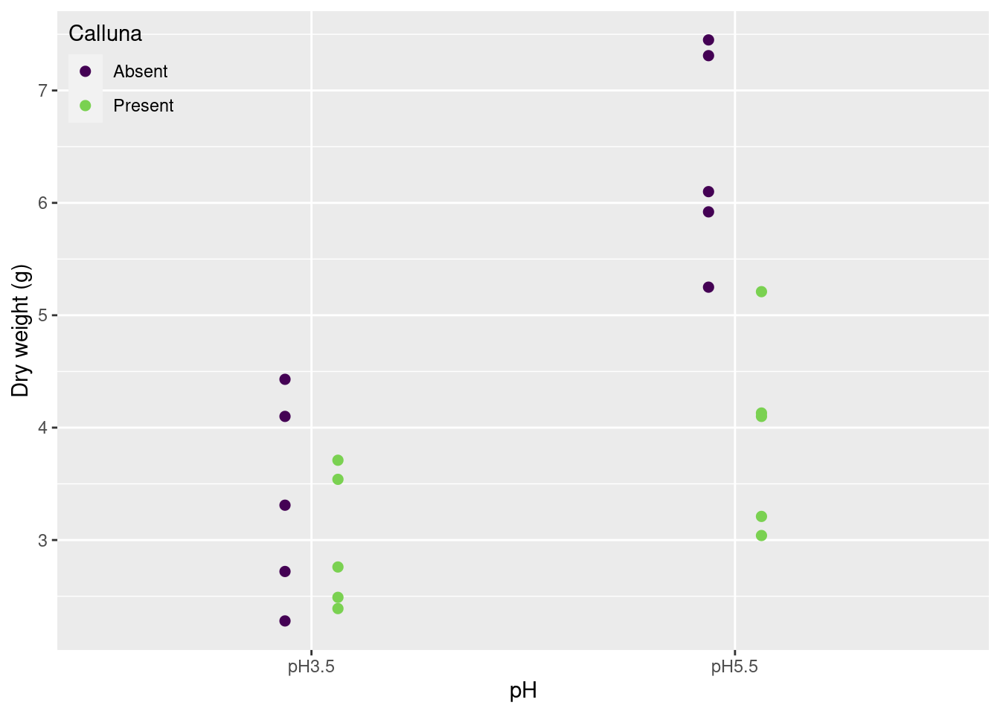
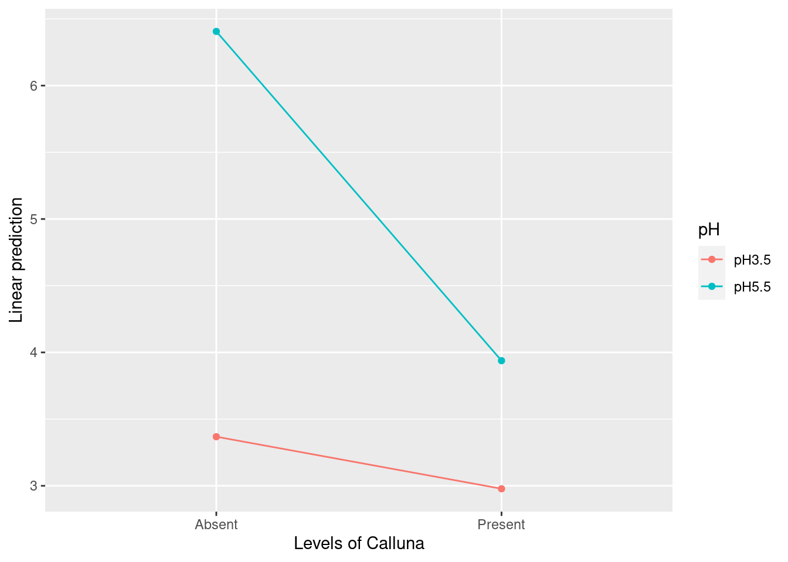
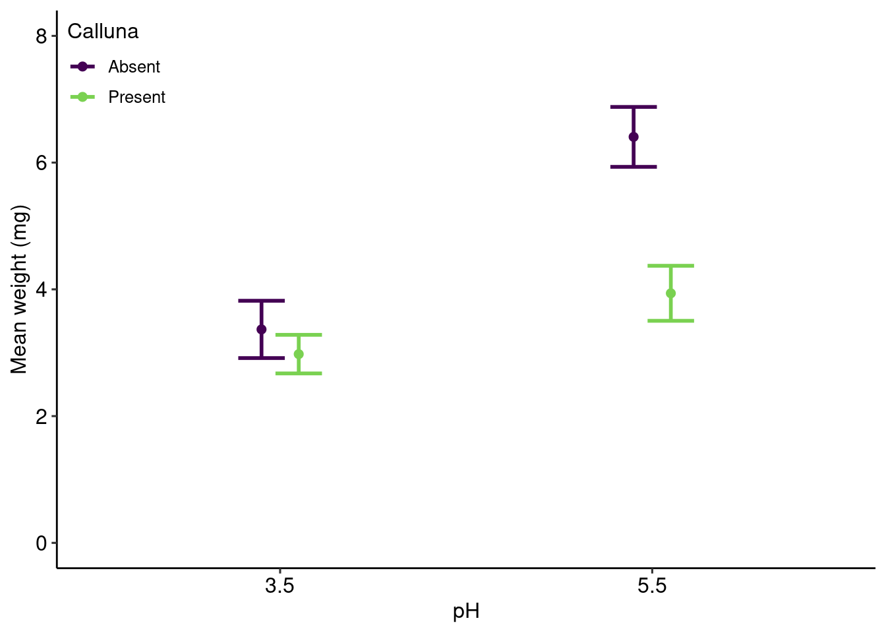

多数群の比較：二元配置分散分析
Comparing multiple groups with Two-Way ANOVA
二元配置分散分析 (Two-Way ANOVA) 2 種類の因子（要因）を同時に比較するときに使用する。
二元配置分散分析の帰無仮説
- \mu_{A1} = \mu_{A2} = \cdots = \mu_{Ai} (要因Aの主効果)
- \mu_{B1} = \mu_{B2} = \cdots = \mu_{Bj} (要因Bの主効果)
- \mu_{ABij} = 0\text{ for all }i,j (相互作用ABまたは交互作用ABの効果)
フルモデルは:
x_{ijk} = \mu_{Ai}+\mu_{Bj} + \mu_{ABij} + \epsilon_{ijk}
水準 i, j, とサンプル k の値は x_{ijk}。 因子 A の水準 i ごとの平均値は \mu_{Ai}。 因子 B の水準 i ごとの平均値は \mu_{Bi}。
交互作用 AB の i,j 効果の平均値は \mu_{ABij}。 残渣（誤差項）は \epsilon_{ijk}。
Two-Way ANOVA Table (二元配置分散分析表)
| Factor | Degrees-of-freedom (df) | Sum-of-Squares (SS) | Mean-square (MS) | F-value | P-value |
|---|---|---|---|---|---|
| A | df_A = I-1 | SS_A | MS_A = SS_A / df_A | MS_A / MS_R | qf(1-\alpha, df_A, df_R) |
| B | df_B = J-1 | SS_B | MS_B = SS_B / df_B | MS_B / MS_R | qf(1-\alpha, df_B, df_R) |
| AB | df_{AB} = (I-1)(J-1) | SS_{AB} | MS_{AB} = SS_{AB} / df_{AB} | MS_{AB} / MS_R | qf(1-\alpha, df_{AB}, df_R) |
| e | df_R = IJ(K-1) | SS_R | MS_R = SS_R / df_R | ||
| df_T = IJK-1 | SS_T |
A と B は主効果、 e は残渣、 I と J は各因子の水準、 K はサンプル数です。 SS_A と SS_B は水準間平方和、 SS_{AB} は相互作用平方和、 SS_R は残渣平方和、 SS_T は総平方和です。 MS_A と MS_B は水準間平均平方、 MS_{AB} は相互作用平均平方、 MS_R は残渣平均平方です。 平均平方の比率はF値です。
上述した分散分析表は Type I 平方和 (SS) を求めています。 このとき、SS(A), SS(B|A), SS(AB|A,B) です。 分散分析の結果は因子に順序とに依存し、非釣り合い型データに合わない。
Type II 平方和は、SS(A|B) と SS(B|A) のみです。相互作用はありません。 分散分析の結果は因子に順序とに依存しないが、非釣り合い型データに合わない。
Type III 平方和は、SS(A|B, AB), SS(B|A, AB), SS(AB|A,B) です。 分散分析の結果は因子に順序とに依存しない、非釣り合い型データにも使えるが、 必ずcontr.sum を設定しなければならない。
平方和の非釣り合い型データの問題については、Hector, Felten, and Schmid (2010), Langsrud (2003) を参考にしてください。
Type I 平方和の方程式
\begin{split} \overbrace{\sum_{i=1}^I\sum_{j=1}^J\sum_{k=1}^K(x_{ijk} - \overline{\overline{x}})^2 }^{\text{総平方和}\;(SS_T)} = \overbrace{JK\sum_{i=1}^I(\overline{x}_{i}-\overline{\overline{x}})^2}^{\text{水準間平方和}\;SS_A} + \overbrace{IK\sum_{j=1}^J(\overline{x}_{j}-\overline{\overline{x}})^2}^{\text{水準間平方和}\;SS_B} \\ + \underbrace{K\sum_{i=1}^I\sum_{j=1}^J(\overline{x}_{ij} + \overline{\overline{x}})^2}_{\text{相互作用平方和}\;SS_{AB}} + \underbrace{\sum_{i=1}^I\sum_{j=1}^J\sum_{k=1}^K(x_{ijk} - \overline{x}_{ij})^2}_{\text{残渣平方和}\;SS_R} \end{split}
\bar{x}_i is the sample mean (標本平均) and \bar{\bar{x}} is the global mean (総平均).
R コード
データはクラウドからダウンロードしました。 クラウドに CSV ファイルとして公開していると、そのまま読み込むことができます。
URL = "https://raw.githubusercontent.com/dzchilds/stats-for-bio/master/data_csv/FESTUCA.CSV"
festuca = read_csv(URL)- 観測値: Festuca ovina (ウシノケグサ) の康重量 dry weight (g) [K = 5]
- A因子: 土壌の pH (3.5 or 5.5) [I = 2]
- B因子: Calluna vulgaris (ギョリュウモドキ) の存在 [J = 2]
データの可視化するまえに、変数を因子に変換します。
festuca = festuca |>
mutate(
pH = factor(pH),
Calluna = factor(Calluna))上のコードは次のように諸略できます。
festuca = festuca |> mutate(across(c(pH, Calluna), factor))では、作図。
ggplot(festuca) +
geom_point(aes(x = pH, y = Weight, color = Calluna),
size = 2,
position = position_dodge(0.25)) +
scale_x_discrete("pH") +
scale_y_continuous("Dry weight (g)") +
scale_color_viridis_d(end = 0.8) +
theme(legend.position = c(0,1),
legend.justification = c(0,1),
legend.background = element_blank())
二元配置分散分析
分散分析の結果。
fullmodel_treatment = lm(Weight ~ pH + Calluna + pH:Calluna, data = festuca)
anova(fullmodel_treatment)Analysis of Variance Table
Response: Weight
Df Sum Sq Mean Sq F value Pr(>F)
pH 1 19.9800 19.9800 28.1792 0.00007065 ***
Calluna 1 10.2102 10.2102 14.4001 0.00159 **
pH:Calluna 1 5.3976 5.3976 7.6126 0.01397 *
Residuals 16 11.3446 0.7090
---
Signif. codes: 0 '***' 0.001 '**' 0.01 '*' 0.05 '.' 0.1 ' ' 1モデル係数の結果。
summary(fullmodel_treatment)
Call:
lm(formula = Weight ~ pH + Calluna + pH:Calluna, data = festuca)
Residuals:
Min 1Q Median 3Q Max
-1.156 -0.603 -0.138 0.732 1.272
Coefficients:
Estimate Std. Error t value Pr(>|t|)
(Intercept) 3.3680 0.3766 8.944 0.000000127 ***
pHpH5.5 3.0380 0.5326 5.705 0.000032562 ***
CallunaPresent -0.3900 0.5326 -0.732 0.475
pHpH5.5:CallunaPresent -2.0780 0.7531 -2.759 0.014 *
---
Signif. codes: 0 '***' 0.001 '**' 0.01 '*' 0.05 '.' 0.1 ' ' 1
Residual standard error: 0.842 on 16 degrees of freedom
Multiple R-squared: 0.7583, Adjusted R-squared: 0.713
F-statistic: 16.73 on 3 and 16 DF, p-value: 0.00003447因子ごとの比較は emmeans パッケージの emmeans() 関数でします。 object 引数に、処理するモデルを渡します。 formula には、A因子 と B因子をモデル式として、渡します。
emmip(object = fullmodel_treatment,
formula = pH ~ Calluna)
図で確認したと、ペアごとの比較をして、t値を求めます。 object 引数に、処理するモデルを渡します。
B因子の水準内のペアごとの比較をしたい場合は、specs に pairwise ~ A因子 | B因子 を渡します。
emmeans(object = fullmodel_treatment, specs = pairwise ~ pH | Calluna)$emmeans
Calluna = Absent:
pH emmean SE df lower.CL upper.CL
pH3.5 3.37 0.377 16 2.57 4.17
pH5.5 6.41 0.377 16 5.61 7.20
Calluna = Present:
pH emmean SE df lower.CL upper.CL
pH3.5 2.98 0.377 16 2.18 3.78
pH5.5 3.94 0.377 16 3.14 4.74
Confidence level used: 0.95
$contrasts
Calluna = Absent:
contrast estimate SE df t.ratio p.value
pH3.5 - pH5.5 -3.04 0.533 16 -5.705 <.0001
Calluna = Present:
contrast estimate SE df t.ratio p.value
pH3.5 - pH5.5 -0.96 0.533 16 -1.803 0.0903全ペア毎の比較は、次の通りです。
emmeans(object = fullmodel_treatment, specs = pairwise ~ pH : Calluna, adjust = "tukey") |>
summary(infer = T)$emmeans
pH Calluna emmean SE df lower.CL upper.CL t.ratio p.value
pH3.5 Absent 3.37 0.377 16 2.57 4.17 8.944 <.0001
pH5.5 Absent 6.41 0.377 16 5.61 7.20 17.011 <.0001
pH3.5 Present 2.98 0.377 16 2.18 3.78 7.908 <.0001
pH5.5 Present 3.94 0.377 16 3.14 4.74 10.457 <.0001
Confidence level used: 0.95
$contrasts
contrast estimate SE df lower.CL upper.CL t.ratio
pH3.5 Absent - pH5.5 Absent -3.04 0.533 16 -4.562 -1.514 -5.705
pH3.5 Absent - pH3.5 Present 0.39 0.533 16 -1.134 1.914 0.732
pH3.5 Absent - pH5.5 Present -0.57 0.533 16 -2.094 0.954 -1.070
pH5.5 Absent - pH3.5 Present 3.43 0.533 16 1.904 4.952 6.437
pH5.5 Absent - pH5.5 Present 2.47 0.533 16 0.944 3.992 4.634
pH3.5 Present - pH5.5 Present -0.96 0.533 16 -2.484 0.564 -1.803
p.value
0.0002
0.8827
0.7118
<.0001
0.0014
0.3080
Confidence level used: 0.95
Conf-level adjustment: tukey method for comparing a family of 4 estimates
P value adjustment: tukey method for comparing a family of 4 estimates 釣り合い型データと直交性について
`summarise()` has grouped output by 'pH'. You can override using the `.groups`
argument.
`summarise()` has grouped output by 'name'. You can override using the
`.groups` argument.つまり、因子の水準毎のデータ数が異なるとき、係数のデフォルト比 (contr.treatment) と デフォルトの平方和 (Type-I) の解析は誤りです。
`summarise()` has grouped output by 'pH'. You can override using the `.groups`
argument.解析用のデータ数の内訳。
dset |>
group_by(pH, Calluna) |>
summarise(N = length(Weight))`summarise()` has grouped output by 'pH'. You can override using the `.groups`
argument.# A tibble: 4 × 3
# Groups: pH [2]
pH Calluna N
<fct> <fct> <int>
1 pH3.5 Absent 7
2 pH3.5 Present 8
3 pH5.5 Absent 12
4 pH5.5 Present 14デフォルトの平方和と比較の場合、モデルに入れる因子の順序によってF値が変わります。
contrasts(dset$pH) = contr.treatment # Required
contrasts(dset$Calluna) = contr.treatment
# pH first, Calluna second.
f1 = lm(Weight ~ pH * Calluna, data = dset)
# Calluna first, pH second.
f2 = lm(Weight ~ Calluna*pH, data = dset)
anova(f1)Analysis of Variance Table
Response: Weight
Df Sum Sq Mean Sq F value Pr(>F)
pH 1 39.924 39.924 102.720 3.178e-12 ***
Calluna 1 26.948 26.948 69.334 5.252e-10 ***
pH:Calluna 1 8.193 8.193 21.081 4.947e-05 ***
Residuals 37 14.381 0.389
---
Signif. codes: 0 '***' 0.001 '**' 0.01 '*' 0.05 '.' 0.1 ' ' 1anova(f2)Analysis of Variance Table
Response: Weight
Df Sum Sq Mean Sq F value Pr(>F)
Calluna 1 26.623 26.623 68.498 6.089e-10 ***
pH 1 40.248 40.248 103.555 2.844e-12 ***
Calluna:pH 1 8.193 8.193 21.081 4.947e-05 ***
Residuals 37 14.381 0.389
---
Signif. codes: 0 '***' 0.001 '**' 0.01 '*' 0.05 '.' 0.1 ' ' 1データ数が異なるとき、因子は直交ではないときは、Type-III 平方を使いましょう。
Type-IIII 平方和の分散分析
Type-I 以外の平方を使うとき、car パッケージが必要です。
library(car)Loading required package: carData
Attaching package: 'car'The following object is masked from 'package:dplyr':
recodeThe following object is masked from 'package:purrr':
someさらに、比較は 必ず contr.sum にすること。
contrasts(dset$pH) = contr.sum # Required
contrasts(dset$Calluna) = contr.sum # Requiredfullmodel_1 = lm(Weight ~ pH * Calluna, data = dset)
fullmodel_2 = lm(Weight ~ Calluna * pH, data = dset)Anova(fullmodel_1, type = "III")Anova Table (Type III tests)
Response: Weight
Sum Sq Df F value Pr(>F)
(Intercept) 683.36 1 1758.218 < 2.2e-16 ***
pH 42.64 1 109.711 1.278e-12 ***
Calluna 17.94 1 46.163 5.336e-08 ***
pH:Calluna 8.19 1 21.081 4.947e-05 ***
Residuals 14.38 37
---
Signif. codes: 0 '***' 0.001 '**' 0.01 '*' 0.05 '.' 0.1 ' ' 1Anova(fullmodel_2, type = "III")Anova Table (Type III tests)
Response: Weight
Sum Sq Df F value Pr(>F)
(Intercept) 683.36 1 1758.218 < 2.2e-16 ***
Calluna 17.94 1 46.163 5.336e-08 ***
pH 42.64 1 109.711 1.278e-12 ***
Calluna:pH 8.19 1 21.081 4.947e-05 ***
Residuals 14.38 37
---
Signif. codes: 0 '***' 0.001 '**' 0.01 '*' 0.05 '.' 0.1 ' ' 1モデルに入れる因子の順序が変わっても、結果は同じです。
解析のまとめ
データは festuca に入っています。 Type-III 平方和を用いて、分散分析をします。
library(car)
library(emmeans)
library(ggpubr)
Attaching package: 'ggpubr'The following objects are masked from 'package:flextable':
border, font, rotatefestuca |> print(n = Inf)# A tibble: 20 × 3
Weight pH Calluna
<dbl> <fct> <fct>
1 2.76 pH3.5 Present
2 2.39 pH3.5 Present
3 3.54 pH3.5 Present
4 3.71 pH3.5 Present
5 2.49 pH3.5 Present
6 4.1 pH3.5 Absent
7 2.72 pH3.5 Absent
8 2.28 pH3.5 Absent
9 4.43 pH3.5 Absent
10 3.31 pH3.5 Absent
11 3.21 pH5.5 Present
12 4.1 pH5.5 Present
13 3.04 pH5.5 Present
14 4.13 pH5.5 Present
15 5.21 pH5.5 Present
16 5.92 pH5.5 Absent
17 7.31 pH5.5 Absent
18 6.1 pH5.5 Absent
19 5.25 pH5.5 Absent
20 7.45 pH5.5 Absent contrasts(festuca$pH) = contr.sum # Required
contrasts(festuca$Calluna) = contr.sum # Required
fullmodel = lm(Weight ~ pH * Calluna, data = festuca)Anova(fullmodel, type = "III")Anova Table (Type III tests)
Response: Weight
Sum Sq Df F value Pr(>F)
(Intercept) 348.20 1 491.0831 1.957e-13 ***
pH 19.98 1 28.1792 7.065e-05 ***
Calluna 10.21 1 14.4001 0.00159 **
pH:Calluna 5.40 1 7.6126 0.01397 *
Residuals 11.34 16
---
Signif. codes: 0 '***' 0.001 '**' 0.01 '*' 0.05 '.' 0.1 ' ' 1(Intercept)は総平均値の結果です。pHは総平均に対する pH の効果です。Callunaは総平均に対する Calluna の効果です。ph:Callunaは総平均に対する 相互作用 の効果です。
Calluna の効果がなかったので、Caluna内のpH に対するペア毎の比較をします。
emmeans(fullmodel, pairwise ~ pH|Calluna, data = festuca, adjust = "tukey")$emmeans
Calluna = Absent:
pH emmean SE df lower.CL upper.CL
pH3.5 3.37 0.377 16 2.57 4.17
pH5.5 6.41 0.377 16 5.61 7.20
Calluna = Present:
pH emmean SE df lower.CL upper.CL
pH3.5 2.98 0.377 16 2.18 3.78
pH5.5 3.94 0.377 16 3.14 4.74
Confidence level used: 0.95
$contrasts
Calluna = Absent:
contrast estimate SE df t.ratio p.value
pH3.5 - pH5.5 -3.04 0.533 16 -5.705 <.0001
Calluna = Present:
contrast estimate SE df t.ratio p.value
pH3.5 - pH5.5 -0.96 0.533 16 -1.803 0.0903もしも全ペアの比較が必要であれば、次のコードを実行します。
emmeans(fullmodel, pairwise ~ pH * Calluna, data = festuca, adjust = "tukey")$emmeans
pH Calluna emmean SE df lower.CL upper.CL
pH3.5 Absent 3.37 0.377 16 2.57 4.17
pH5.5 Absent 6.41 0.377 16 5.61 7.20
pH3.5 Present 2.98 0.377 16 2.18 3.78
pH5.5 Present 3.94 0.377 16 3.14 4.74
Confidence level used: 0.95
$contrasts
contrast estimate SE df t.ratio p.value
pH3.5 Absent - pH5.5 Absent -3.04 0.533 16 -5.705 0.0002
pH3.5 Absent - pH3.5 Present 0.39 0.533 16 0.732 0.8827
pH3.5 Absent - pH5.5 Present -0.57 0.533 16 -1.070 0.7118
pH5.5 Absent - pH3.5 Present 3.43 0.533 16 6.437 <.0001
pH5.5 Absent - pH5.5 Present 2.47 0.533 16 4.634 0.0014
pH3.5 Present - pH5.5 Present -0.96 0.533 16 -1.803 0.3080
P value adjustment: tukey method for comparing a family of 4 estimates festuca_summary = festuca |>
group_by(pH, Calluna) |>
summarise(mean = mean(Weight),
sd = sd(Weight),
n = length(Weight)) |>
mutate(se = sd / sqrt(n - 1)) |>
mutate(pH = str_remove(pH, "pH"))`summarise()` has grouped output by 'pH'. You can override using the `.groups`
argument.ggplot(festuca_summary) +
geom_point(aes(x = pH, y = mean, color = Calluna),
size = 2,
position = position_dodge(width = 0.2)) +
geom_errorbar(aes(x = pH, y = mean,
ymin = mean - se,
ymax = mean + se,
color = Calluna),
size = 1,
width = 0.25,
position = position_dodge(width = 0.2)) +
scale_x_discrete("pH") +
scale_y_continuous("Mean weight (mg)",
limits = c(0, 8)) +
scale_color_viridis_d(end = 0.8) +
theme_pubr() +
theme(legend.position = c(0,1),
legend.justification = c(0,1),
legend.background = element_blank())